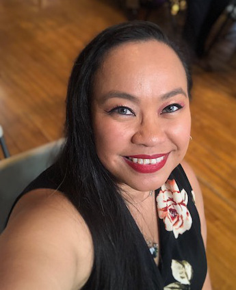

About Me
- Github Profile
- LinkedIn Profile
- Email Address
-
(917) 495 - 7925
- April Zona Garcia Resume
There are many unique things about me that I love.
One is that I am named after my Godmother, which is why I go by Zona.
Another unique thing about me is that I am adopted. I have very little information on my biological parents except for the fact that they were both Filipino. My adoptive mother is Filipino and Spanish, my adoptive father is Black and Irish.
The third unique thing about me (and the thing that I am most proud of) is that I am a Living Kidney donor. I donated my kidney to my mother in 2008.
I love animals! My all time favorite animal is a Black Panther or Black Leopard. I have 3 cats: 2 via osmosis (they belong to my boyfried) named Phoebe and Fancy Pants but they have adopted me and a kitten we rescued and adopted we named Aesop. I also have 2 Sugar Gliders, named Moscato amd Merlot, and 2 hedgehogs named Lacie and Gracie (named after Aida Lovelace and Grace Hopper both female pioneers in computer science).
Random factoid: a group of hedgehogs is called an Array.
My professional career has been a long winding road. I have worked in pet stores and arts and crafts stores. I have worked my way up from part time associate to Store Manager. I made the transition from retail to government in 2013. I started working at the Transportation Security Administartion as a screener on a checkpoint, and am currently a Human Resources Assistant. I enjoy the job and helping people but I have decided that a career change is in order. I always feel the need to keep expanding my mind - to learn something new. So I made the decision to learn something new: by pursuing a career in Web Development. My ideal job would allow to learn and give me space to grow. I've never been afraid of hard work and the satisfaction that comes from a job well-done and done to the best of my abilities.
The world is a big place. I want to be able to travel the world, or stay home and help raise a family. I want the freedom to do all things I desire all while doing a job that fulfills me.
"Understand well as I may, my comprehension can only be an infinitesimal fraction of all I want to understand."
~ Ada Lovelace